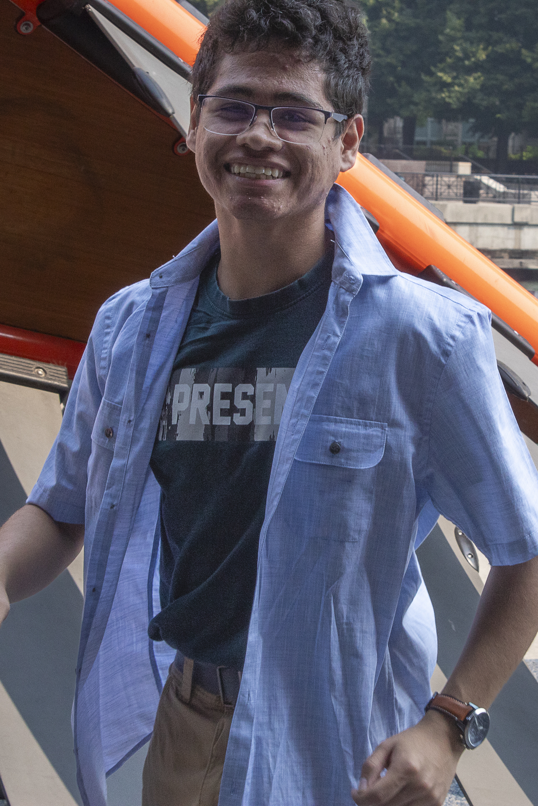

My Photography Website
About Me
Hello, I’m David Fernandez, a 20-year-old hobbyist photographer from Chicago, Illinois. I specialize in city/street photography. I started this hobby when I signed up for Art-170A at Northeastern Illinois University and decided to continue to improve my skills in this hobby of mine.
I don’t plan on making this a career and I hope that people enjoy this carefree approach to photography. Each of my projects include the ten best photos of the day and the settings used for each. Anyone interested in starting their own photography journey could use them as inspiration for their own projects.
Anyone interested can follow me on Instagram at @2005_davidf.
Fun Fact: I can solve a 7x7 rubik's cube in less than twenty minutes.

Equipment
Canon EOS Rebel T100
18 Megapixels
3:2 Aspect Ratio
EF/EF-s Lens Mount
Bought New: $379

Brand: Canon
Filter Size: 58 mm
Focus Type: Autofocus
Lens Mount: Canon EF-S
Lens Type: Wide-Angle/Standard
Max Focal Length: 55 mm
Min Focal Length: 18 mm
Min Aperture: f/3.5-5.6
Included with Camera

Brand Name: Canon
Filter Size: 58 mm
Focus Type: Autofocus
Lens Mount: Canon EF
Lens Type: Wide-Angle/Standard
Max Focal Length: 135 mm
Min Focal Length: 35 mm
Min Aperture: f/4-5.6
Bought Used: $85